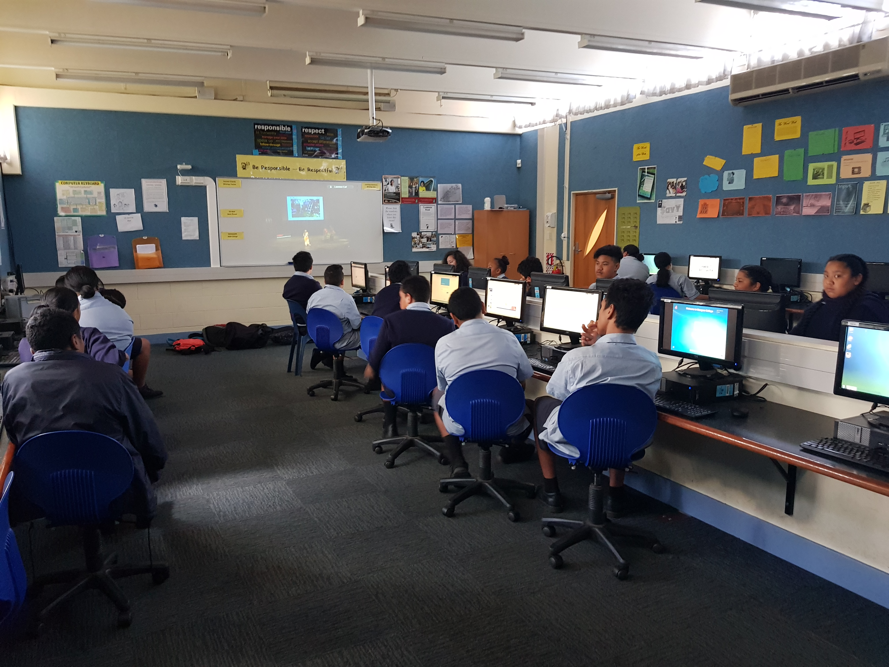
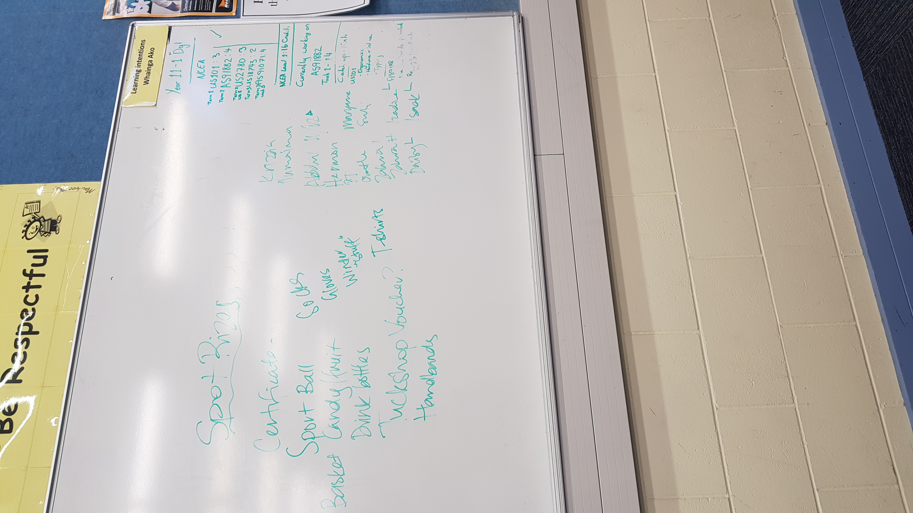

How to Collect Student Voice?

"Photo of students talking during a fire drill at Mangere College"
There are many different ways to gather Student voice, and none of them is without risks and faults. Different techniques to gather student's voice can also be useful in for some students and utterly ineffective for others. It is usually best to have multiple ways to collect student's voice. Below are some things to consider when collecting student's voice.

"Digital Class Collaboration at Mangere College"
Advantages of Anonymous vs named feedback
There is much discussion about the advantages of anonymous vs named feedback i have linked it below. There needs to be a sufficient level of trust between learners and educators, so learners feel that their thoughts and opinions will be respected and not held against them.It is also important to note that when student details are collected with student voice there needs to be a way for students to receive updates and conclusions allow students to feel their voices are being listened to and heard. All instances of student's voice should be responded to even if it is to explain why it cannot happen. If students feel their voices are ignored, they may choose not to share it again.
Survey design
It is essential to keep surveying students to a minimum. Surveying maybe an easy way to collect massive amounts of data but some students switch off very quickly when they realise surveys are long-winded.  "Keep them short keep them to the point.'
Use simple to understand language and allow the learners ample time to record their thoughts. Questions should be not targeted towards any particular issue.
Recording information about student discussions Students may be more open to having a group discussion about their thoughts and opinions in an open-air environment. It is essential to take notes to ensure the accuracy of the information a natural way that is easy to do is to write their thoughts an opinion on the board as we discuss them this shows the students I am not manipulating their opinions and thoughts.